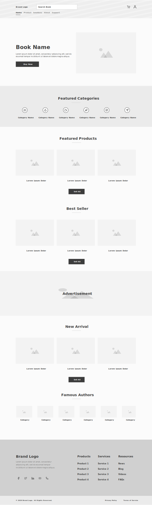
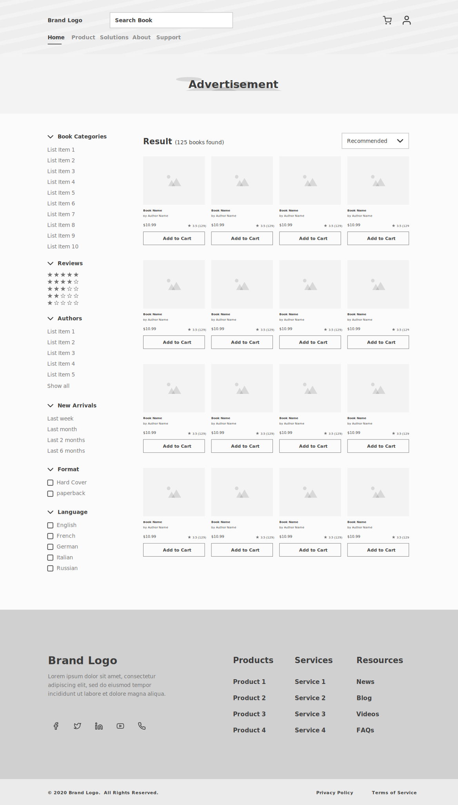
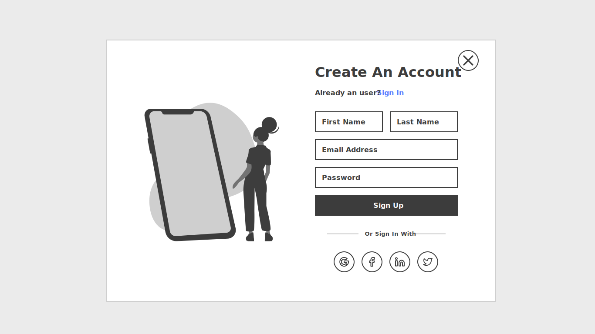
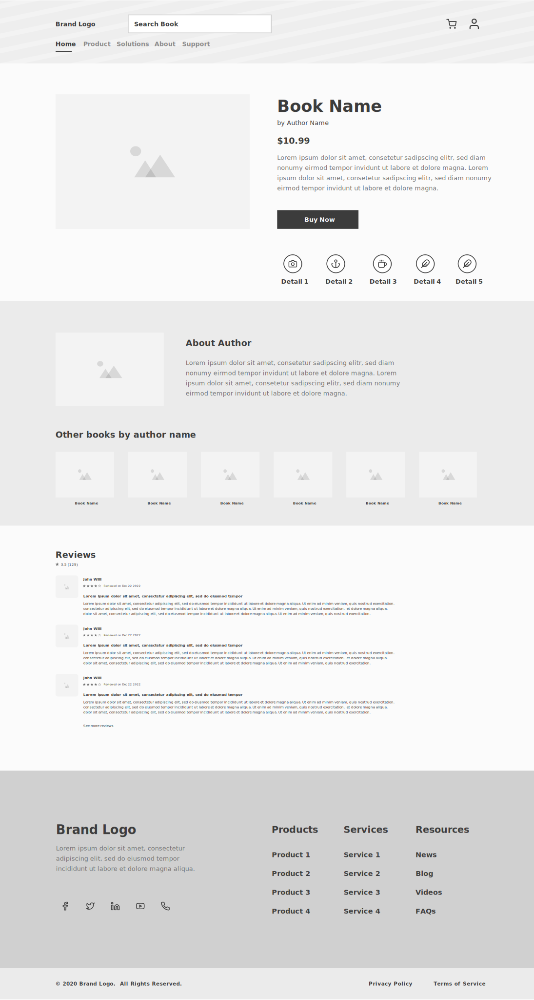
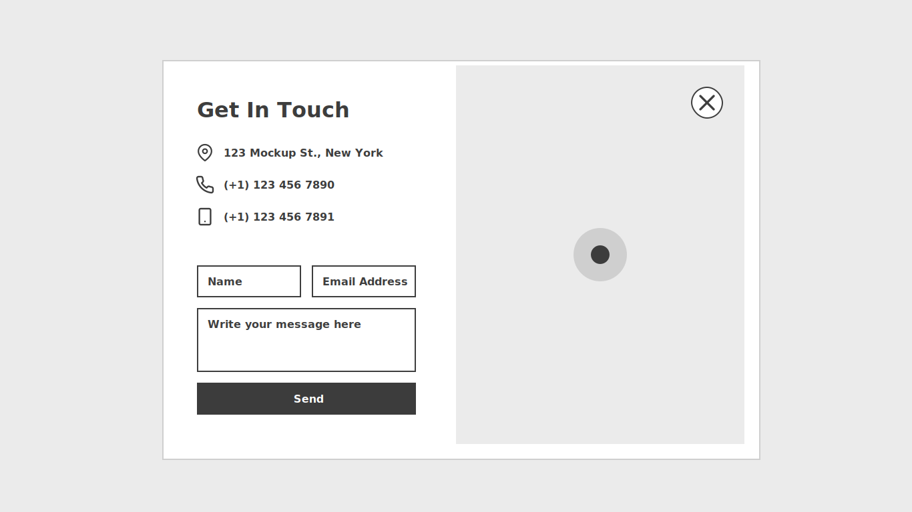

An e-commerce website that offers books of all the categories for all the age groups with a modernized UX.
This project is an e-commerce website that offers books of all the categories for all the age groups. Due to confidentiality, a product name won't be disclosed.
I was hired as the first and only designer on the team to work closely with developers and domain experts. My work consisted of research, designing and prototyping for the main product as well as working on support materials, such as building a website and designing features for possible platform expansion that was not on the main roadmap.
We had lots of assumptions that we were not always able to test and validate due to time and finance constraints. The lack of usability in ecommerce platforms which led us to rethink and adjust our product during the design process, adding up to the development time and cost.
Initial ideas are generated using various creative methods, which are then implemented in sprints to form prototypes and MVPs (minimum viable product). The MVPs are tested and validated with customers and external colleagues. The implementation takes place in cross-functional feature teams. A team consists of a product owner, developer and designer, is self-contained and fully capable of acting.
E-commerce application
Dec 2020 - June 2021
4
Adobe XD, Figma, Photoshop
The quantitative and qualitative data collected informed a successful design process that reduced 200 unique screens to a mere eleven templates.
The team and I spent an iteration exploring problems within the e-commerce market. Due to my decade journeying in the designing and branding sphere, I was able to guide the conversation professionally.
Our primary research goals were born out of ideation around our main interest of disrupting books selling e-commerce industry
During this stage, we went through a dozen ideas, accepting and rejecting them based on asking the following product thinking questions.
In the empathize stage, I conducted initial individual user interviews to understand what my users really wanted, and why. I choose a series of few questions both qualitative and quantitative in nature.
Guerilla Interviews
8 people interviewed
15 minutes each
Contextual Interviews
With the insights from the interviews, two major personas were prepared in order to frame the general user type.
Here are the details of the personas


The empathy map created helped us to understand the user needs and develop deeper & unexpected insights.
Divided personas inputs by using empathy mapping method
Comparing user journeys of the retail and digital shopping, helped us to draw parallels between then in order to fill gaps and identify opportunities to improve the experience.
Here, two types of journey maps based on personas we created.
As a user, I want a feature, so that I can goal
By jotting user stories, I was able to come up with features that would be essential to them and enhance their experience. I also recorded details about the feature like requirements, priority & value added.
From the user journey, the path in which we wanted the users to move in order to achieve their goal quickly with the best experience was defined.
Here is a simplified user flow.
From the user flow, the structure of the website that is most logical to the users and their navigation was defined.
We identified three main areas of the buying experience 1) Community 2) Products 3) Book Assist. Here is a simplified information architecture for buying by products.
Paper prototyping helped me to visualize early the layout and content of screens and their ordering.
I sketched out screens and figured out the basic interactions between them.
After reviewing the sketches with the client and a couple of iterations, it’s time to start refining in the form of a low fidelity wireframe.
Utilizing wireframes in the beginning phases of design, is an efficient way to communicate placement of elements without getting too bogged down in minute details. A huge benefit and timesaver is that the layout can easily be changed.
Home Page
Books Listing Page
Sign Up
Book Details Page
Contact Us
In the testing stage I focused on the Usability Study parameters, and followed with an in-depth research study plan.
10-15 minutes
5 participants
Remote
Unmoderated usability study
To start the UI Design, the most appropriate styles to convey the mood of nature were chosen.
I sketched out screens and figured out the basic interactions between them.